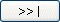

Par le choix du menu : "Imprimer".
Par le bouton 
Par le raccourci clavier Ctrl+P.
Le zoom comporte deux possibilités d'impression, l'impression standard et l'impression paramétrable. Ce paragraphe décrit l'impression paramétrable. Pour l'impression standard reportez-vous au paragraphe précédent.
L'impression paramétrable permet de sélectionner des champs à partir du mode liste courant. Ces champs peuvent ensuite être imprimés ou écrits dans un fichier ou dans le presse-papiers (pour ensuite être collés dans un tableur par exemple).
Comment paramétrer une impression ?
Le choix "Paramétrer l'impression" du menu "Edition" permet d'accéder à la boîte de dialogue du paramétrage des impressions et des extractions. Cette boîte de dialogue comporte deux onglets; le premier avec les paramètres généraux concerne essentiellement l'impression, tandis que le deuxième avec les options avancées permet de paramétrer les extractions ainsi que des options de présentation des états.
Paramètres généraux
Les paramètres titre et sous-titre apparaîtront dans le cartouche d'en-tête. Le paramètre pied dans le cartouche de bas de page. Par défaut, le titre est en caractère gras. Les polices de caractères peuvent être choisies dans les options avancées. Le texte du sous-titre peut-être remplacé par les critères de sélection.
Le tableau de gauche contient l'ensemble des colonnes du mode liste courant. Le tableau de droite contient les colonnes choisies. Deux paramètres sont associés à une colonne choisie :
Le paramètre "Cumulable" indique qu'il faut totaliser la colonne. C'est l'option par défaut des champs numériques.
Le paramètre "Séparation" indique qu'il faut tracer un trait vertical de séparation à droite de la colonne.
Le bouton

(ou double-clic sur un champ du tableau des colonnes) permet de choisir une colonne avec séparation.Le bouton (ou shift double-clic sur un champ du tableau des colonnes) permet de choisir une colonne sans séparation. Généralement la dernière colonne de la liste sera sans séparation.
Le champ est ajouté après la colonne courante du tableau des colonnes choisies.
Si le champ choisi est numérique, l'option cumulable est positionnée par défaut.
Le tableau des colonnes choisies est en saisie :
Pour modifier une option il faut cliquer sur la colonne de contrôle (raccourci clavier F4).
Pour supprimer une colonne choisie il faut se positionner sur la colonne et la supprimer par la touche "Suppr".
Pour inverser l'ordre de colonnes il faut utiliser les fonctions de sélection et de copier/coller.
Présentation
Le zoom imprime le nombre de colonnes entières pouvant tenir sur la feuille de papier. Si toutes les colonnes choisies ne peuvent être imprimées, vous pouvez :
Choisir une taille de police moyenne ou petite,
Choisir une présentation en mode paysage,
Modifier la largeur imprimée de certaines colonnes (paramètre du tableau des colonnes choisies).
Les hauteurs des lignes et des en-têtes sont automatiquement calculées en fonction de la police.
Options avancées
Les options avancées permettent de modifier certains paramétrages avancés des impressions ou bien de configurer les extractions de données vers un fichier ou le presse-papiers.
Options avancées d'impression
Les polices de caractères choisies doivent être définies dans la feuille de styles d'Harmony. Si une police n'est pas spécifiée ici, le zoom utilisera une police par défaut. Les hauteurs des lignes et des en-têtes sont automatiquement calculées en fonction de la police.
L'option "Impression du texte des filtres" permet d'imprimer en clair les filtres de sélection. Ce texte est imprimé à la place du sous-titre.
L'option "Zonage" permet de colorer globalement un groupe de lignes sur deux pour faciliter la lecture de l'état imprimé. Par exemple, on pourra colorer 1 ligne sur deux, deux lignes sur cinq en modifiant les valeurs "Lignes blanches" et "Lignes grises". Cette option peut être désactivée globalement pour tous les zooms en positionnant le paramètre "Zonage" du chapitre [Xzoom] de Divalto.ini à 0 avec l'utilitaire xDivaltoMajIni.
La case à cocher "Séparation des milliers" permet d'insérer un espace entre les milliers des données numériques pour en faciliter la lecture.
Extraction
Un groupe de radio boutons permet de choisir si l'on désire envoyer les données vers l'imprimante ou dans un fichier ou vers le presse-papiers.
Options avancées de l'extraction
Le choix du séparateur de colonnes permet d'indiquer quel caractère sera mis entre deux champs d'une même ligne. Outre les choix prédéfinis, le choix "autre" permet d'utiliser n'importe quel caractère de séparation. Dans ce cas on saisira sa valeur en hexadécimal. Si la virgule est choisie comme séparateur de colonnes, elle sera remplacée par le point décimal dans les champs numériques non entiers.
L'identificateur de texte permettra d'encadrer les champs alphanumériques d'apostrophes ou de guillemets. Si l'apostrophe est choisie, elle sera remplacée par le guillemet dans les champs de texte, inversement, si le guillemet est choisi, c'est le guillemet qui sera remplacé par l'apostrophe.
La case à cocher "Séparation des milliers" permet d'insérer un espace entre les milliers des données numériques pour en faciliter la lecture.
Lorsque l'option "Effacement du fichier" est désactivée, l'écriture dans le fichier de sortie se fait à la suite des données existantes.
"Avec les en-têtes de colonnes" permet d'écrire les en-têtes de colonnes dans le presse-papiers.
Comment imprimer la liste paramétrée ?
En se positionnant sur la première ou la dernière fiche à imprimer en mode liste, puis :
S'il n'y a pas d'impression standard :
Par le choix du menu : "Imprimer".
Par le bouton 
Par le raccourci clavier Ctrl+P.
Si une impression standard est définie, ces choix impriment l'impression standard et non pas l'impression personnalisée. Pour imprimer l'impression personnalisée, il faut par le choix "Paramétrer l'impression" du menu "Edition" ouvrir la boîte de dialogue des impressions paramétrables puis imprimer :
Par le bouton 
Par le raccourci clavier Ctrl+P.
Le bouton d'impression est grisé si la boîte de dialogue n'est pas appelée depuis la consultation du mode liste.
Une boîte de dialogue permet de choisir si l'on désire imprimer les fiches :
De la première fiche à la fiche courante.
De la fiche courante jusqu'à la dernière fiche.
Toutes les fiches.
Un bouton "Abandon" permet d'interrompre l'impression en cours.
Les fiches imprimées tiennent évidemment compte des filtres de sélection.
Restriction
La possibilité d'imprimer avec un code langue différent du code langue utilisé pour les affichages ne concerne pas les impressions paramétrables des zooms.